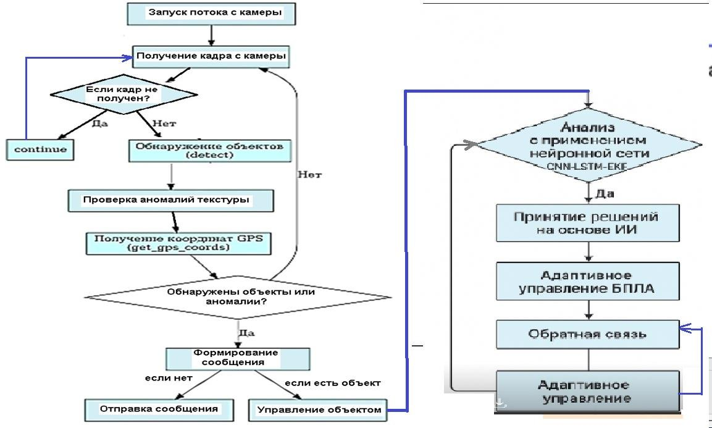

Этап 7: Принятие решений
Интеллектуальное принятие решений по блок-схеме (рисунки 2 и 3).
Выполняемые задачи:
- Создать программу по блок-схеме
- Выполнить её
- Проанализировать решение
Все этапы объединяются в цикл блок-схемы (рисунок 2): кадр → обнаружение объектов → проверка аномалий текстуры → GPS → решение. Если найден объект или аномалия, формируется сообщение, а при подтверждении нейросетью CNN–LSTM–EKF включается адаптивное управление БПЛА с обратной связью.

Код (Python)
while True: # блок-схема, рисунок 2
ok, frame = cap.read() # получение кадра
if not ok:
continue
objects = detect(frame) # обнаружение объектов
anomaly = texture_anomaly(frame) # проверка аномалий текстуры
lat, lon = get_gps_coords() # координаты GPS
if objects or anomaly:
msg = make_message(objects, lat, lon)
if objects and cnn_lstm_ekf(msg): # анализ нейросетью CNN–LSTM–EKF
adaptive_control(objects) # адаптивное управление БПЛА
else:
send_message(msg) # отправка сообщенияВыполнил(а): Абатова Акерке, Сулейменова Мадина, группа 25-19